A Reasearch on School Shooting Rate in the US
by Miremad Aghili
14 May 2018
This is an independent research on school shootings in the United States of America since 1999. The effects of various factors are taken into account and some predictive models have been proposed in the hope that this study can be used in order to implement an effective gun control law for protecting the children. The references for the data can be found from the links in the text and at the end of the paper.
Motivation
The school shooting in the United States is a big issue, where over 200 cases were reported only in twenty years, resulting in many deaths, injuries, and casualties of the children. There is a need for a solution or at least a plan to reduce these unfortunate incidents, especially now that there is an awareness regarding this issue after the recent school shooting in Parkland Florida. This study is mostly focused on the data presented by Washington post and presented in github.
The picture above shows the distribution of school shootings in the United States, during past 20 years. The incidents more or less are spread out all across the country which means this is not a local issue and it threatens the lives of all of the children.
Political Influence
Here we investigate the effect of decision making by the leaders in the country on the shooting rates in the United States. The first point that comes to the mind is the amount of attention the education sector receives from the government each year. If we characterize the amount of attention by government expenditure per capita
(see Knoma) each year we see that there is indeed a direct correlation between the two (with p-value 2e-3). However, there is a one-year time lag as one would expect between the decision and the actual effect on the shooting rate.
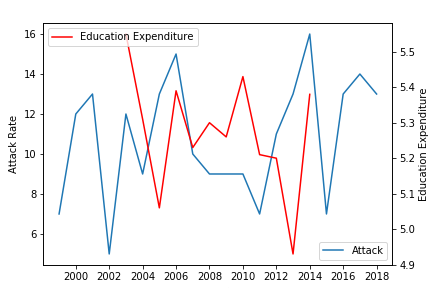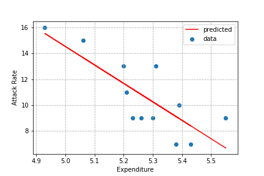
In addition to the above, one can investigate the impact of parties in the power on the attack rates (for example see Presidency, Congress, House). Here in this study, we assume all the positions have equal power and holding two out of the three means the party has the majority of the power. This is an important point because National Rifle Association (NRA) is a major supporter of Republican party. Therefore, between the two parties the Democrats are a better supporter of gun control. Accordingly, one would expect that when Republicans are in power they would use their influence in favor of NRA and this would result in easier access to the firearms. By looking at the distribution of attack rates based on the party in power we see that indeed this is true and the attack rate is well above the average when the
Republicans are in power. The normalized plot, with the area representing the attack rate and the color representing the corresponding party, also verifies this claim.
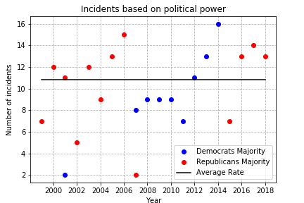

Gun Control
In this section, we will be looking at the positive effects of even a minor gun control on school shooting rates. Even though it will not be enough but these are some easy solutions to at least reduce the risk until a more general solution is proposed.
Friends and Family
We see that even with the smallest of attention we could save many children. In particular, more than 27% of the shooters obtained their weapon from their friends and family, which if it was not provided one could save 96 children. On the other hand, about 12% of the shootings were accidental. Accidental shootings can happen mostly because of lack of experience with guns. Removing this would be equivalent to saving 3 lives and 38 fewer injuries.
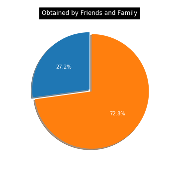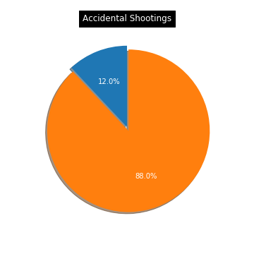
Government
Taking a look at the type of guns used in school shootings we realize a scary fact. Most of the attacks with Automatic or Semi-automatic guns have happened in recent years and that means these guns are now more available to the people. Moreover, the average number of people killed with such guns (1.36 per attack) is the highest after rifles (1.71 per attack) with high precision. The government can reduce the number of attacks by 21% and the number of dead by 46% by at least banning the automatic or semi-automatic guns.
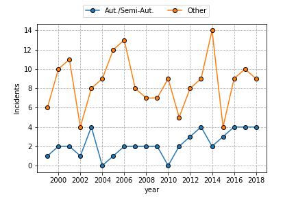
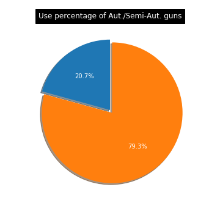
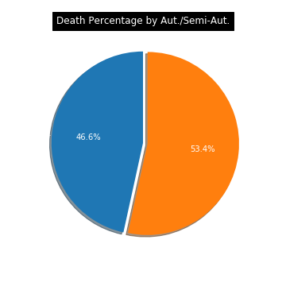
Prediction and Prevention
This section has special importance as it provides some statistics for prediction and prevention of school shootings. A few important factors that need to be taken into account, is the sensitive age for different genders, number of guns and time of the year.
Time of the year
Time of incidents is presented in the data as a day of the week, date and the school year. The day of the week does not show any pattern. the shootings are almost uniformly distributed between them. However, Most of the shootings are concentrated in the first two months of the year Jan. and Feb. (about 33%) and this is in agreement even with all-time shooting record (see Wikipedia). To justify the result one can look at the shooting type. 65% of the shootings are targeted and that is more than the average targeted shootings in the data. The shooters most probably have used the holidays to come up with a plan, and after the holidays they accordingly attacked.
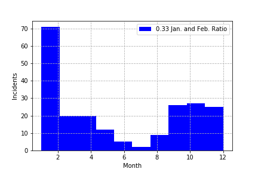
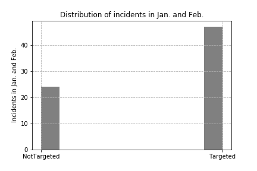
A two-dimensional histogram of the month and the day of the month indicates the sensitive dates, where the police should pay more attention to the schools to reduce the risk. We can see that this map truly indicates that the number of attacks should be very small during the Summer.
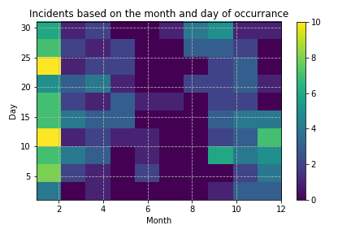
Gender and Age
This part of the study is important in the sense that it provides a gender-based age range for which the children are more vulnerable and need more attention from the educational system. Motivational speakers can go to the schools each year and target the students in their sensitive age and hopefully reduce the risk.
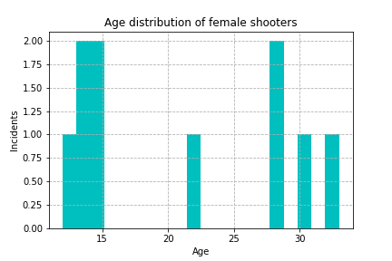
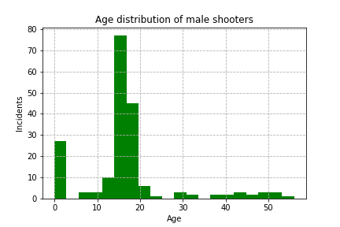
As it can be seen from the plots, the sensitive age for male shooters is 15 to 20 and for the female shooters, it is 10 to 15. The age distribution for different races and different locations (states) is investigated, but these age ranges seem to be universal and independent of the race and location. That makes age ranges as a good measure of risk, and Government and education system can have a huge impact by targeting the students with specially produced advertisements and employing psychologists that can work with students.
Staffing
A quick look shows that the number of staffing matters a lot. For less than 10 staff per 100 students, the number of shootings is dramatically higher, which means that the schools should either lower their enrollment of increase the number of staffs. Given that a very big majority of attacks has happened in public schools, that means the government is responsible for these incidents. By increasing the education budget and requiring the schools with a lower number of staffings per 100 students to hire more teachers etc. the shooting rate will be reduced by a huge amount.
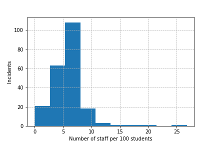

Gun Population
One reason that immediately comes into the mind for high shooting rate, is the high percentage of gun ownership in the united states. Even though this ratio has been going down during past few years (see Statistic Brain), the attack rates are not following the same trend. This can be a place for Republicans who are on NRA's side, thanks to their lobbying (see OpenSectrets or Business Insider) to defend gun ownership. Moreover, if we look at the number of guns per capita in different states (obtained from ThoughtCo.), we see that there is actually no pattern and oddly for the lower value of gun-per-capita the attack rates are high. However, there is another quantity that more indicative and so far I have not seen anybody to take that into account. The total number of guns in the state is what makes a difference. This quantity can be interpreted as a measure of the availability of the guns and with this definition, we should expect higher rate for the higher number of guns.

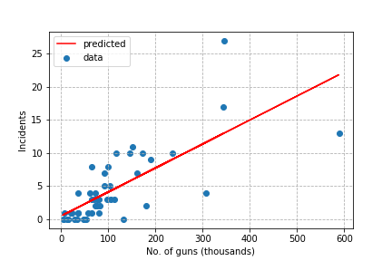
The number of guns shows that the killing rate indeed is directly related to the number of guns accessible in an area (with p-value 4.8e-10). The easier to find a gun the more probable is the school shooting. This result is also in agreement with the global pattern presented by Vox. The area of the state does not play a role, but the area of the cities might be a good measure. The motivation behind this idea is that a true density of guns is a better measure of accessibility of a gun.
We can divide the United States into 5 major areas by K-means clustering methods. By this classification, we can find the areas with higher risk. Also, we can characterize these different classes if we look more closely.
Another point worth mentioning is that most of the crimes have happened in the East of the country where the areas of states are very small but the number of guns is high. Most of the states with most restrictive gun control laws have high shooting rates (based on Washington Post), which indicates that the laws really do not have a significant effect, however reducing the number of guns will bring down these rates linearly.
Future Plan
- Look at the cities' Gun Density (Gun per unit Area).
- Using the effective features to devlope a predictive model on school shooting rates.
- Develope a map of risky schools or areas based on selling rate of guns and the amount of received money by the school each year to inform parents or the police.